TDCGExplorerの画面は、下記のようなデザインになっています。
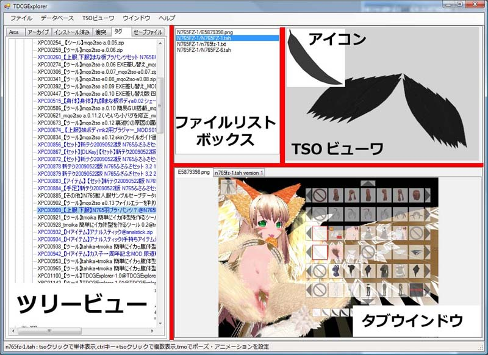
上記の赤で示された部分をマウスでクリックして動かすと、画面レイアウトを変更する事ができます。 ウインドウの位置、サイズ、レイアウトはSystem.dbに保存され、次回起動時にも同じ場所とレイアウトで表示されます。
重要な事があります。これらの各ツリーは始点となるディレクトリが違う事と関心の高いファイル別にツリーを分類しているだけで、実際にこのツリーでディレクトリやアーカイブを選択して、ファイル一覧でファイルを操作した時の動作は、全て共通です。例えば、セーブファイルツリーのセーブファイルをクリックした場合と、zipファイルの中にあるヘビーセーブをクリックした場合、動作は全く同じで利用できる機能も全く変わりありません。この操作性の直交性の高さがTDCGExplorerの中核となる機能ですが、最初はこのインターフェースに対して違和感を感じる方もいるかと思います。
ユーザーインターフェースの挙動はWindowsのそれより、Mac OS Xライクなユーザーインターフェースになっています。なので画面レイアウトやそのアクションはiTunesの操作性に非常に似ています。直感的にファイルを触って右ボタンでメニューを出して操作する。これが基本的な操作になります。いくつかのシステムコマンドはメニューバーにありますが、主な操作コマンドのほとんどは右ボタンメニューに配置されています。
<目次に戻る><目次に戻る>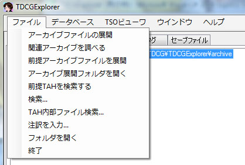
アーカイブファイルを展開 現在選択されているアーカイブファイルをアーカイブ展開フォルダに解凍します3DCG MODS Referrenceサーバーに、このアーカイブに関連する情報を問い合わせます。
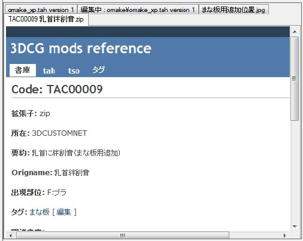
問い合わせると、インターネットにアクセスしてそのアーカイブに関連する情報を調べることが出来ます。
そのアーカイブを使用するのに必要なアーカイブファイルをアーカイブ展開フォルダに解凍します。
アーカイブ展開コマンドで展開したアーカイブを含むフォルダを開きます
色番号00番のtbnが無い為に使用不可能になっているtahファイルを検索します。
指定されたキーワードを持つツリー項目を緑色でハイライト表示します。
アーカイブにコメントをつけることができます。次のダイアログが表示されます。
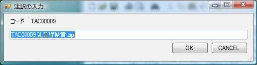
注訳を入力すると、以後からこのアーカイブの名前は抽訳で入力された内容で表示されます。
そのアーカイブを含むフォルダを開きます。
アプリケーションを終了します
<目次に戻る>
アプリケーションが使うデータベースを操作するメニューコマンドです。
現在の初期設定にしたがって、データベースを構築したり、その後の変更に対する更新を取り込むことができます。最初の構築にはいくらか時間がかかります。更新は変更分のみの操作となるのですぐに終了します。
3DCG MODS Referrence Serverから各種情報を取得してデータベースに反映します。この情報は、データベースファイルとは別にキャッシュしますので、この操作を行うとデータベースの更新を行わなくても最新の情報で処理されます。
複数のTDCGExplorerを同時に起動してデータベース間の情報を交換したり、セーブファイルの情報を最新状態に更新した時に実行してください。表示が最新のデータベース情報で更新されます。
TDCGExplorerの初期設定情報を入力します。次のダイアログが表示されます。

初期設定は以下の項目を設定してください。なお、デフォルト値は3Dカスタム少女をデフォルトインストールした時の状態で自動設定されます。
tahファイルを格納している3Dカスタム少女のarcsディレクトリを指定してください。TDCGExplorerはこのディレクトリから情報を読み出して動作します。
3Dカスタム少女のセーブファイルが保存されるディレクトリを指定してください。なお、この設定値は通常変更する必要はありません。
ポーズファイルのデフォルト保存先を指定します（読み取りはTDCGディレクトリから読み取られます)。
アーカイブファイルのzipファイル等を格納しているディレクトリを指定します。TDCGExplorerはこのディレクトリからアーカイブ情報を読み取って、インストール状態やヘビーセーブデータの組み立てを行います。このディレクトリにあるzipファイルは展開済み状態であっても、zipやrar,lzhファイルのままでもいずれでも構いません。
アーカイブファイル展開先ディレクトリを指定してください。アーカイブファイルを展開した時には、このディレクトリにファイルを展開します。XPなどではarcsディレクトリのサブディレクトリ等を直接指定することもできます。
TAHファイルのデフォルト保存先とTAH編集キャッシュファイルの保存先を指定します。
3DCG MODS Referrence Serverのアドレスを指定します。通常変更の必要はありません。
3DCG MODS Referrence Serverのアドレスを指定します。通常変更の必要はありません。
3DCG MODS Referrence Serverのアドレスを指定します。通常変更の必要はありません。
アーカイブファイルをコード名として認識する正規表現を指定します。通常変更の必要はありません。
ディレクトリ名からアーカイブファイルを認識する為の正規表現を指定します。通常変更の必要はありません。
アーカイブツリー表示でアーカイブファイルを選択した時に行う動作を指定します。
arcsディレクトリとアーカイブディレクトリのいずれを優先して検索するか指定します。
キャッシュファイルの削除設定、TSO表示設定を行います。
TDCGExplorer起動時に3DCG MODS Rererrence Serverから最新情報を取得するか指定します。オフラインで使用する時はチェックボックスをはずしてください。
セーブファイルビューアの回転中心とカメラの初期位置を設定します。
タブ表示をインテリジェントモードと上書きモードのいずれかに設定します。
アーカイブファイルを展開した時、アーカイブファイルを含むフォルダを開くかどうか設定します。
tahファイル内部の衝突検出レベルを変更します。チェックボックスの組み合わせによって、衝突の検出レベルを変更する事ができます。
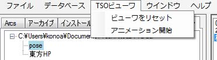
ビューワーをリセットしてカメラをホームポジションに戻します。TSOのレンダリングも停止します。
アニメーションtmoファイルを開いていた場合、そのアニメーション表示を開始します。
<目次に戻る>
指定されたツリーノード以下全部を展開します。
新規に内容を表示する為のタブを作成します
現在選択されているタブを閉じます
<目次に戻る>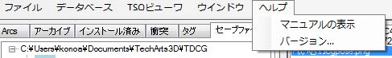
このマニュアルを表示します
アプリケーションとシステム、データベースのバージョンを表示します
<目次に戻る>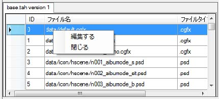
TAHファイル表示モードでは以下のコマンドが使えます。
TAHファイルをTAH編集モードで開きます。
現在表示しているタブを閉じます。
<目次に戻る>TAHファイルの管理は、基本的にArcsタブを使います。
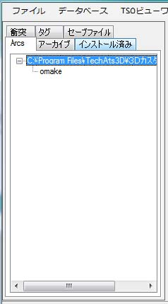
Arcsと書かれたタブを選び、ディレクトリを選ぶと、
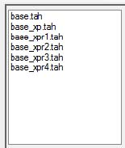
そのディレクトリにあるtahファイルがリストアップされます。
同様に、アーカイブタブではMODを格納しているzip等のファイル、インストール済みでは、インストールされているアーカイブ、衝突タブでは衝突しているtahファイル、タグでは3DCG MODS Referrenceに登録されているタグ、セーブファイルではセーブファイル・ポーズファイルが表示されます。これらの操作方法は共通になっています。
<目次に戻る>
ツリーでディレクトリを選ぶと各種ファイルの一覧が出ます。
ここでファイルを選んで右ボタンを押してメニューを出すと、以下のコマンドが使えます。 またファイルを選ぶと自動的に関連するタブが開きます。
既存タブの内容を消去せずに、新しいタブに表示する為のタブを作成します。
現在選択されているTAHファイルを、TAH編集モードで開きます。
TAH編集ファイルをキャッシュする設定にしていた場合、キャッシュファイルが保存されます。 このキャッシュファイルを手動で削除する時に使用します。
TAHファイルの中身をTAH展開ディレクトリに中身のファイルを展開します。
<目次に戻る>
ツリーでディレクトリを選んで、右ボタンを押してメニューを出すと、以下のコマンドが使えます。
現在選択しているディレクトリ以下を全て展開表示します。
アーカイブファイルを展開 現在選択されているアーカイブファイルをアーカイブ展開フォルダに解凍しますそのアーカイブを使用するのに必要なアーカイブファイルをアーカイブ展開フォルダに解凍します。
アーカイブにコメントをつけることができます。次のダイアログが表示されます。
3DCG MODS Referrenceサーバーに、このアーカイブに関連する情報を問い合わせます。
問い合わせると、インターネットにアクセスしてそのアーカイブに関連する情報を調べることが出来ます。
そのアーカイブを含むフォルダを開きます。
<目次に戻る>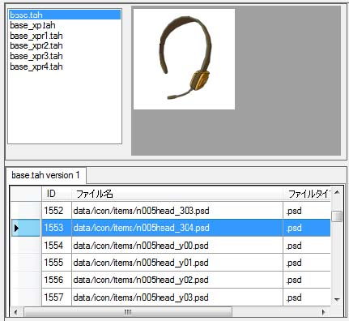
ファイル名をクリックすると、そのファイルに関連するアイコンを表示します。
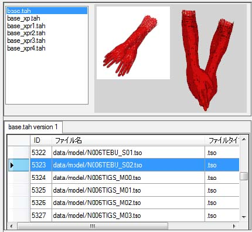
tsoファイルを選択すると、そのtsoファイルのモデルを3D表示します。
<目次に戻る>TAH編集モードは非常に多くの機能を持っています。TAH編集モードに入ると、自動的にtahファイルを解凍してデータベースファイルを作成し、内部の個別ファイルを直接編集できる状態になります。
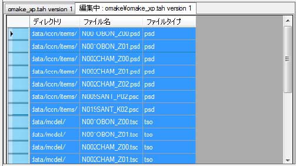
TAH編集モードを起動すると、上記のようにtahファイルが解凍された状態で表示されます。
<目次に戻る>
TAHファイルに含まれる全てのファイルを選択します。TAH全体を梱包する時は全て選択して下さい。編集した一部のファイルだけを保存する場合には、SHIFTキーやコントロールキーを押しながらマウスでファイルをクリックして一部のファイルを選択してください。
TAHバージョンとTAHファイル名を変更します。次のダイアログが表示されます。

このようなダイアログが開いて、TAHバージョンとTAHファイル名を設定できます。 ここで設定されたバージョンとファイル名でTAHは保存されます。
現在選択されているファイルをTAH編集ディレクトリに保存します。
指定されたTAH内部ファイル名を変更します。次のダイアログが表示されます。

TBNファイル名が指定されていた場合、内部で参照しているTSOファイル名も新しい名前に書き換えられます。ファイル名は前方部分の一部だけを書き換える子とができるので、属性を変更する事なく別の名前に内部ファイル名を付け替えることが出来ます。ファイルを選択する時は、TBN、TSO、PSDファイルの三つをまとめて指定してください。指定されてなかった時には、TBNに対するPSDやTSOファイルの関連性が損なわれることがあります。
ファイルの属性を変更する事ができます。次のダイアログが表示されます。

指定されたファイルの属性文字と、TBNファイルが指定されていた場合にはTBNのファイル内容を書き換えます。別の部位にアイテムを移動するときにはカテゴリを変更する事で3Dカスタム少女上の表示位置を変更する事ができます。ファイルを選択する時は、TBN、TSO、PSDファイルの三つをまとめて指定してください。指定されてなかった時には、TBNに対するPSDやTSOファイルの関連性が損なわれることがあります。
指定したアイテムの色番号を変更します。次のダイアログが表示されます。
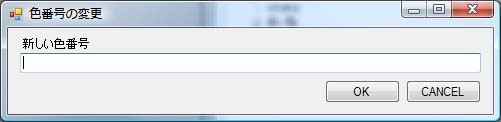
ここでは00からZZまでの任意の英数字２桁を入力してください。入力すると、色番号を変更し、TBNファイルが含まれている場合にはTBNファイル内部の色番号を変更します。ファイルを選択する時は、TBN、TSO、PSDファイルの三つをまとめて指定してください。指定されてなかった時には、TBNに対するPSDやTSOファイルの関連性が損なわれることがあります。
TAH編集データベースからファイルを削除します。不要なパーツを取り除きたい時に使用してください。
TAHファイルを作成します。次のダイアログが表示されます。

保存先を指定してTAHファイルを保存してください。デフォルトではTAH編集ディレクトリが指定されています。それ以外のディレクトリに保存することもできます。
TBNファイルをTSOファイルから作成します。次のダイアログが表示されます。
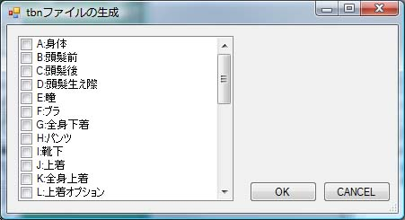
属性ごとにチェックボックスがあるので、TBNファイルを作成したい属性をチェックしてください。既に指定された属性のTBNファイルがあった場合には、そのチェック指定は無視されます(新たに作り直したいときには前述の選択したファイルの削除コマンドを使ってください)。TBNが生成されるとき、そのTSOと同じ名前を持つアイコンPSDファイルがあった場合には自動的にコピーされます。TSOファイルとPSDファイルを用意すれば、TBNファイル作成はこのコマンドで全て行えます。
TBN作成コマンドはカテゴリ変更コマンドと似ていますが、TBNファイル作成コマンドではTSOのファイル名は元のファイル名をそのまま使用します。したがって１個のTSOファイルに対して複数のTBNファイルとアイコンファイルを作る事ができます。なお、TBNの作成コマンドを使って作成したTBNファイルの名前を書き換えたり、属性を変更するとTBNとTSOの関係が失われてしまうことがあります。TBN作成コマンドを実行する時は、あらかじめファイル名・属性・色番号を指定してから行ってください。
現在開いているTAH編集タブを閉じます。初期設定で指定してあった場合には、自動的にTAH編集キャッシュファイルも削除します。複数のTAHファイルを編集しようとした時、既にTAH編集ファイルがあるというエラーが出た場合には、名前が重複しているTAH編集モードのタブを閉じてください。
<目次に戻る>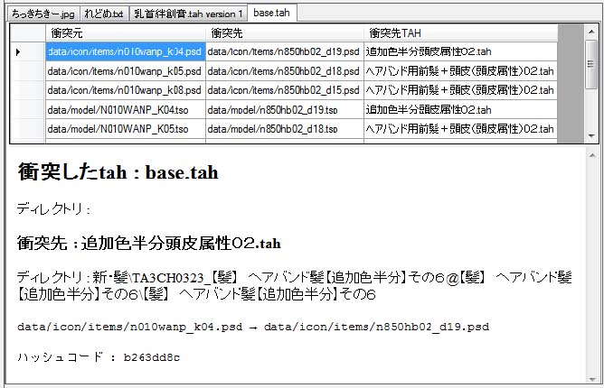
TAHファイル内でハッシュコードやファイル名が衝突すると、衝突ツリーにファイルが現れます。ここでディレクトリを選んで、tahファイルをファイルリストボックスで選択すると、衝突の詳細情報が表示されます。

衝突しているTAHファイルを編集モードで開きます。
表示している衝突表示タブを閉じます。
<目次に戻る>セーブファイルツリーでディレクトリを選択すると、セーブファイルの一覧が表示されます。これは他のツリーモードとは異なる右コマンドメニューが表示されます。

既に表示しているタブを閉じないで新しく表示する為のタブを作成します。
ファイル名を変更します。
ファイルの作成・更新・アクセス日時を書き換えます。3Dカスタム少女上での表示順序が入れ替えることができます。
現在ファイルリストに出ている全てのファイル日時を一括して書き換えます。3Dカスタム少女上では、ファイルの日時ではなくファイルの名前順序で表示されます。
<目次に戻る>セーブファイルを選択すると、セーブファイル情報が表示されます。
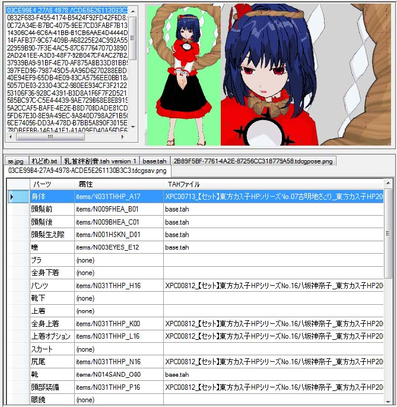
セーブファイル表示タブでは次の右コマンドメニューが使えます。

次のダイアログが表示されます。TAHファイルにつける名前を入力してください。
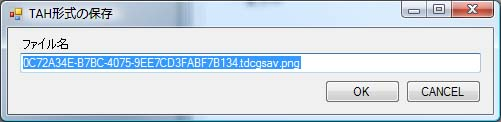
セーブデータ・ヘビーセーブデータからTAHファイルを作成します。TAHファイル構成要素が自動的に作成されて、TAH編集モードのタブが新規に表示されます。
次のダイアログが表示されます。セーブファイルの保存先を指定してください。
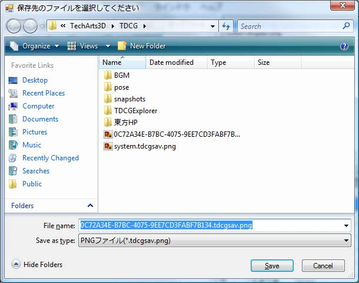
セーブデータ、ヘビーセーブデータを作成します。この機能を使う事により、arcsにアーカイブをインストールせずに直接アイテムを装備したセーブデータを作成することができます。仕様により通常セーブデータから作成したセーブデータの背景は白になります。
セーブファイルを3D表示します。セーブファイルをダブルクリックしても表示されます。
セーブデータ表示タブを閉じます
<目次に戻る>ポーズファイルを選択すると、ポーズファイルに関する情報が表示されます。

ポーズファイル情報タブでは次の右コマンドメニューが使えます。

サムネイル付ポーズファイルを作成します。次のダイアログが表示されます。
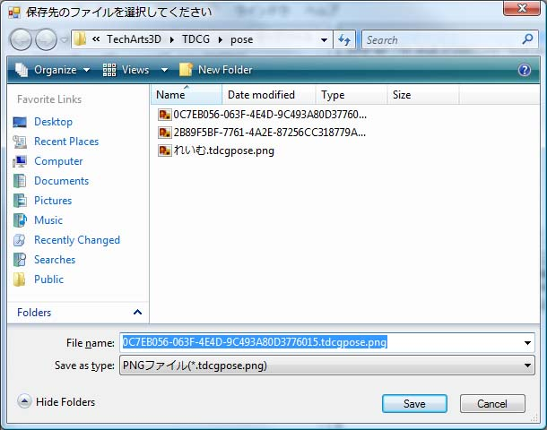
ポーズファイル保存先を入力してください。ポーズファイルのサムネイルを作成すると、ポーズファイルには以下のようにサムネイル表示がTSOビュー表示部分の内容で書き換えられます。
保存する前はこのように表示されます。
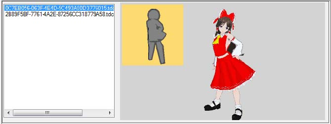
保存後はこのようにサムネイルがつきます。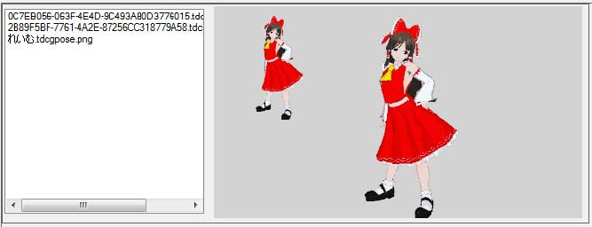
このサムネイル画像は3Dカスタム少女上でも表示されます。
ポーズファイル中の指定されたtmoファイルを保存します。次のダイアログが表示されます。

tmoファイル保存先を指定して保存してください。
ポーズファイル中のtsoデータからtahファイルを作成します。次のダイアログが表示されます。

tahの保存ファイル名を入力してください。tah編集モードタブが新規に開きます。
ポーズファイルを3D表示します。セーブファイルをダブルクリックしても表示されます。
ポーズファイル情報タブを閉じます
<目次に戻る>その表示タブを閉じます。
その他、タブ固有のWindowsコモンコントロールメニュー(カットアンドペースト等)が使えます。
<目次に戻る>セーブファイル・tah展開ディレクトリ・tahファイルをTDCGExplorerアプリケーションウインドウにドロップすると、そのファイルを表示したり編集することができます。tahファイルの場合は編集モードで、それ以外のファイルは表示モードで開きます。